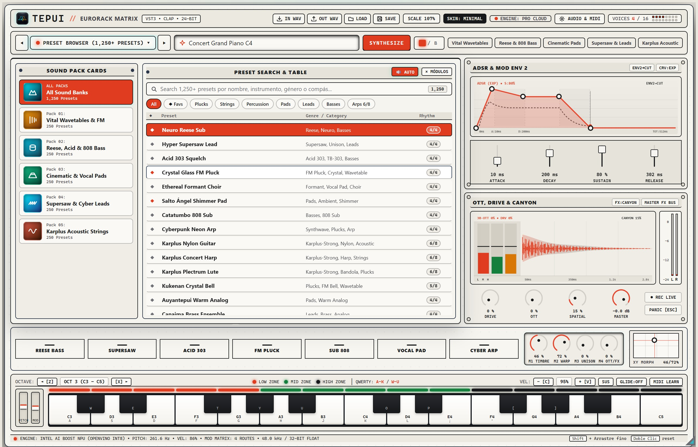
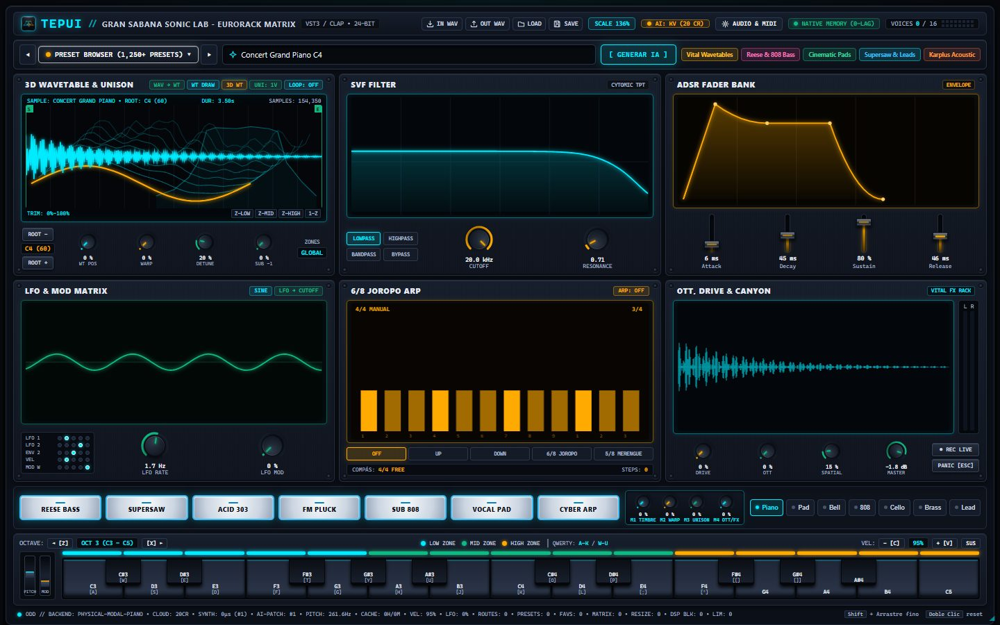
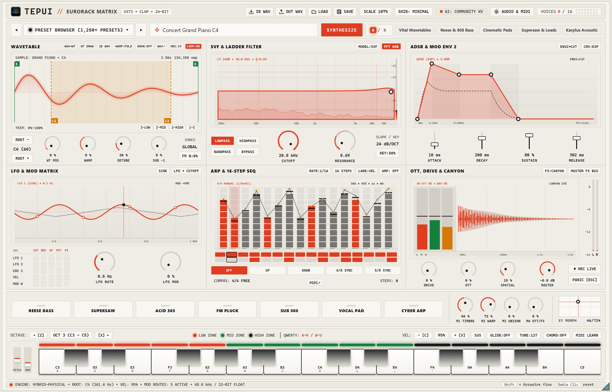
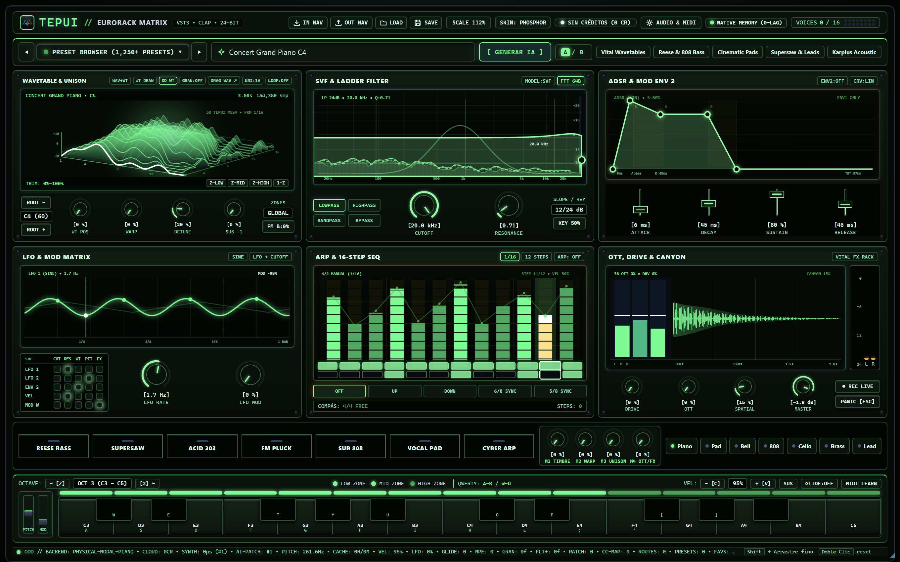
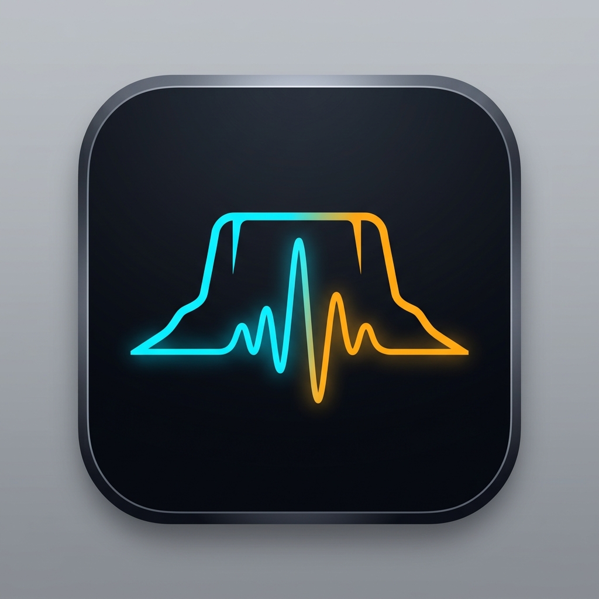

1,250+ PRESETS
Navega instantáneamente entre bajos Neuro, leads Supersaw, cuerdas acústicas por guía de ondas y pads vocales con filtros de formantes. Cada parche diseñado con IA se almacena en caché comunitaria global.
Sintetizador wavetable de 64 puntos con dibujo a mano alzada sobre pantalla OLED, resíntesis WAV → WT de ciclo único, guía de ondas Karplus-Strong y diseño de parches asistido por IA en Rust nativo (VST3, CLAP y Standalone v1.13.0).
Hilo de audio en tiempo real con cero asignaciones de memoria, enrutador MIDI USB Hot-Plug en modo Standalone, Super-Unison estéreo de 8 voces con sub-oscilador dedicado y arquitectura multiplataforma (Windows, macOS y Linux).

Chasis Eurorack de 6 módulos con modo WT DRAW, resíntesis WAV → WT, Reese Bass, Supersaw y Karplus-Strong.
Prueba el motor tímbrico directamente en tu navegador o dibuja con el cursor tu propia forma de onda de 64 puntos. En el plugin nativo, cada trazo actualiza el oscilador de las 16 voces polifónicas sin bloqueos.
Arrastra el cursor sobre la pantalla para esculpir los 64 armónicos del ciclo o selecciona uno de los motores Pro Synth incluidos.
Motor activo: Neuro Reese Bass. Toca una nota para audicionar.
Combina síntesis por tablas de onda 3D con Spectral Warp, filtros Cytomic TPT de topología preservadora de transientes, matriz de modulación 5x5 y compresión multibanda OTT de 3 bandas con saturación analógica.
Construido desde cero en Rust sobre nih-plug con interpolación cúbica Hermite de 4 puntos, detección de tono fundamental por autocorrelación YIN y puente híbrido para generación de muestras.

Navega instantáneamente entre bajos Neuro, leads Supersaw, cuerdas acústicas por guía de ondas y pads vocales con filtros de formantes. Cada parche diseñado con IA se almacena en caché comunitaria global.

Cada voz incorpora su propio filtro de estado variable de integración trapezoidal libre de retardo, modulado por dos LFOs sincronizados a tempo, envolvente auxiliar, velocidad MIDI y rueda de modulación.

Para los timbres acústicos de cuerda pulsada, TEPUI ejecuta una línea de retardo fraccional real excitada por ráfagas de púa filtradas, filtro de dispersión all-pass de rigidez armónica y resonancia de caja.

La etapa final procesa la mezcla estéreo a través de un saturador hiperbólico asimétrico, un compresor upwards y downwards de 3 bandas estilo OTT y una red de retardo espacial con realimentación cruzada.
Todos los instaladores incluyen las 5 expansiones de fábrica preinstaladas y el motor de síntesis híbrido listo para usar en Ableton Live, FL Studio, Reaper, Bitwig y Studio One.
| EXPANSIÓN | MOTOR DSP | TIMBRES CLAVE |
|---|---|---|
| Vital Wavetables & FM | Morfing Wavetable 3D + Fase FM | FM Glass Pluck, Metallic Bell, Harmonic Morph |
| Neuro Reese & 808 Bass | 2x Saws Desafinadas + Sub -1 Oct | Neuro Reese 55Hz, Sub 808 Glide, Acid 303 |
| Supersaw & Cyber Leads | 7 Voces Estéreo + OTT Multibanda | Anthem Supersaw, Cyber Arp, Trance Stack |
| Cinematic & Vocal Pads | 3 Formantes Vocales + Shimmer | Choir Formant Pad, Gran Sabana, Canyon Air |
| Karplus Acoustic Strings | Guía de Ondas Karplus-Strong | Concert Nylon Pluck, Harp Waveguide, Warm Body |

El instalador automático deposita el plugin VST3 en C:\Program Files\Common Files\VST3, el paquete CLAP en C:\Program Files\Common Files\CLAP y crea el acceso directo para TEPUI Studio Standalone.
TEPUI opera 100% gratis con la caché comunitaria compartida o conectando tu propio proveedor compatible con OpenAI (Groq, Ollama local, OpenAI, Anthropic o Cloudflare Workers AI):
{
"ai_provider": "groq-or-ollama-byok",
"local_fallback": "karplus-wavetable",
"zero_alloc_audio_thread": true,
"sample_rate_hz": 48000,
"custom_wavetable_points": 64
}